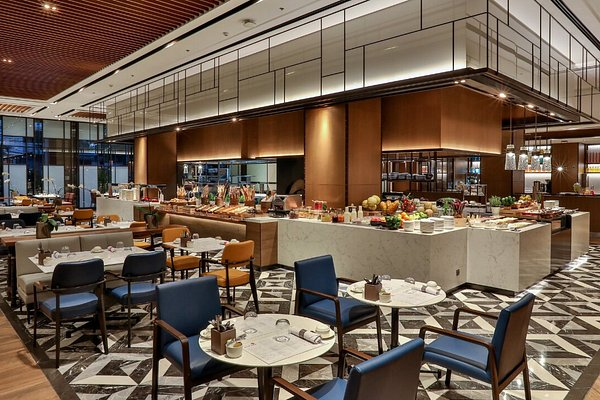

ENTREPRENEURSHIP
Entrepreneurship can be define as the process of identifying a business opportunity,
creating a new business, and taking on the associated risks with the aim of making a profit.
It involves the conception, development, and operation of a new business,
typically characterized by innovation and the ability to take calculated risks.
Aspect of Entrepreneurship :
- Enterprise
- Self-Employment
-
Enterprise :
In the context of entrepreneurship, enterprise refers to the creation and
operation of a business or company.
An enterprise can be small or large and can operate in various industries. It involves the organization of resources such as capital, labor, and technology to produce goods or provide services.
-
self-employment, can be define as the state of working for oneself
rather than being employed by an organization or another person.
They include independent contractors, or entrepreneurs, run their own businesses,
manage their own work, and are responsible for generating their own income.
FACILITIES AVAILABLE FOR SELF-EMPLOYMENT
Various facilities and resources can support self-employment, helping individuals start and run
their own businesses. some key facilities available for self-employment include:
-
Coworking Spaces :Shared workspaces that provide desks,
meeting rooms, internet access, and other office amenities.
They are ideal for small business owners who need a
professional environment without the overhead of renting a full office
-
Financial Resources : Having access to capital through grants,
loans, crowdfunding, and investment from investors and venture capital.
-
Online Platforms and Marketplaces :
These are Websites for selling products such as jumia, konga, aliexpress etc.
-
Educational Resources : These include Online courses, webinars,
workshops, and seminars for business skills and knowledge.
-
Legal and Accounting Services : Services for business registration,
tax filings, and legal or financial advice.
-
Technology and Software : Tools for project management, accounting, communication, and marketing.
ELEMENTS AND QUALITIES OF SUCCESSFUL ENTREPRENEURSHIP
-
New Idea: A fresh product, service, or business approach that meets a market need or fixes an issue.
-
Business Plan: A clear plan that lays out the company's aims, methods, target market, money forecasts, and how it will run.
-
Market Research: To make smart choices, you need to know your target crowd rivals, what the market wants, and what's happening in your field.
-
Funding and Resources: Enough money, from savings, loans, investors, or grants, to back the business in its early days.
-
Marketing Strategy: Good ways to push the product or service to draw in and keep customers.
-
Sales and Customer Gain: Plans to make sales and build up a customer base, with a focus on keeping customers happy and coming back.
-
Operations and Management: Smooth processes and systems to keep daily tasks running well.
-
Scalability: The power to grow the business and move into new markets without losing quality or control.
-
Adaptability: The ability to change with shifts in market conditions, what customers want, and other outside factors.
GEOGRAPHIC AND OPERATIONAL SCOPE
- Locality
- Nationality
- International

-
Locality : These are Local businesses typically serve customers within a close geographic range and may tailor
their products or services to the local culture, needs, and preferences.
Examples include local retailers, restaurants, and service providers.
-
Nationality : These are National businesses operate across various regions or states within
one country and comply with national laws and regulations.
Examples include national chains, franchises, and large companies with multiple locations across the country.
-
International : These are International businesses may produce, market, and sell their products or
services in various countries, adapting to different legal, cultural, and market environments.
Examples include multinational corporations (MNCs), global brands, and international trade businesses.
IMPORTANCE OF ENTREPRENEURSHIP
-
Creates Jobs : Starting a new business One of the major advantages that entrepreneurs have in life is they are responsible for opening up new businesses and creating jobs, growing it to become one's employees thereby leading to -- this reduce rate unemployment.
-
Enhance Concepts : Entrepreneurs release items, solutions or processes that can enhance our lives and also resolve issues.
-
Contributes to Economic Growth : Businesses earn profits which result in money pumped back at the bottom of sight and profit from business, produces wealth creators for both; owning/having a job/giving capital investment.
-
Boosts Communities : Entrepreneurs tend to invest back into their communities through job creation and improved local infrastructure.
-
Fosters Independence : Establishing a business effectively enables individuals to take ownership of their financial future and become the boss.
-
Able to pivot: Entrepreneurs have the capacity to identify new bases of a competitive advantage and adjust with market changes, which helps keep our economy resilient during hard times.
-
Motivates Others: the majority of those that - succeed at changing into entrepreneurs conjointly have glorious transferable skills, as well.